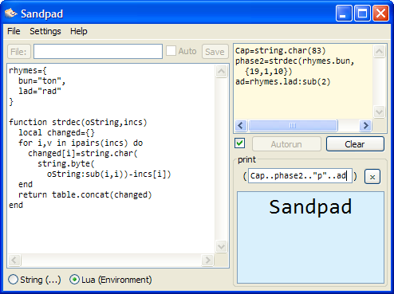

Overview
Sandpad is a little .wlua application for writing Lua code. It uses IUP for the UI. It looks like this:
Sandpad is free software and uses the MIT license, the same license as Lua 5.1.
Status
The current version of Sandpad is 1.0. It is designed for Lua 5.1 and IUP version 3, and is developed against Lua 5.1.4 and IUP3RC2 (the latest versions of each as of this writing).
Download
Sandpad can be downloaded from its LuaForge page.
Dependencies
Sandpad depends on IUP. Some of its elements rely on the presence of features that are only present since IUP 3, but it can be used to some degree of similarity on IUP 2 (and patches to better support older versions of IUP will gladly be accepted).
History
- Sandpad 1.0[??/August/2009]
- First public version
- "Created 7/14.2009"[14/July/2009 - ??/August/2009]
- The only text close to a version number present in the About box in versions before release.
Credits
Sandpad is made by Stuart P. Bentley.
Contact
Stuart can be contacted at his e-mail address, and in fact this is the current bug report method in Sandpad. Comments, suggestions, and, ironically, bug reports are better posed on the project page on the project page on LuaForge (see sidebar).